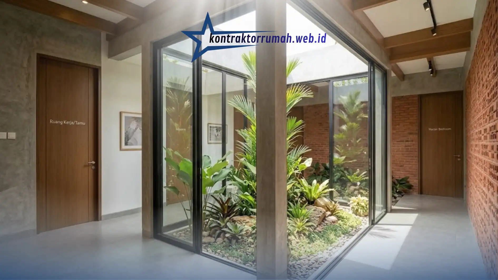

Mencari keseimbangan antara ruang privasi dan area berkumpul keluarga adalah tantangan terbesar dalam merancang hunian. Bagi keluarga modern, denah rumah 3 kamar sering menjadi standar ideal karena menawarkan fleksibilitas tinggi: satu kamar tidur utama, satu kamar anak, dan satu ruang multifungsi yang bisa disulap menjadi ruang kerja, kamar tamu, atau kamar anak kedua di masa depan sesuai kebutuhan keluarga yang terus berkembang.
Namun, mengelompokkan tiga kamar dalam satu luasan lahan yang terbatas membutuhkan trik tata ruang khusus, agar rumah tidak terasa sumpek atau sempit. Berikut beberapa inspirasi tata letak yang sedang tren dan terbukti efisien untuk berbagai ukuran lahan.
Poin Penting
- Denah rumah 3 kamar fleksibel: kamar utama, kamar anak, dan ruang multifungsi untuk ruang kerja, kamar tamu, atau kamar anak kedua.
- Konsep open space membuat rumah lega, tetapi butuh ventilasi baik agar bau dapur tidak menyebar.
- Layout L-shape menempatkan kamar utama di belakang menghadap taman kecil demi privasi maksimal.
- Inner courtyard membawa cahaya alami dan udara silang ke ketiga kamar, cocok untuk lahan memanjang ke belakang.
- Di lahan sempit, andalkan mezzanine, furnitur multifungsi, dan warna dinding terang.
Konsep Open Space Tanpa Sekat Tengah
Area ruang tamu, ruang makan, dan dapur digabung menjadi satu ruangan besar memanjang tanpa dinding pembatas. Tiga kamar tidur ditempatkan berjejer di satu sisi bangunan, biasanya di sisi kanan atau kiri, sehingga jalur sirkulasi utama di tengah rumah terasa jauh lebih luas dan lega.
Konsep ini cocok untuk keluarga yang sering menghabiskan waktu bersama dan menyukai suasana rumah yang terbuka, meskipun perlu diimbangi dengan pengaturan ventilasi yang baik agar bau dari dapur tidak menyebar ke seluruh ruangan.
Zoning Privasi Maksimal dengan Layout L-Shape
Kamar tidur utama diletakkan di bagian paling belakang menghadap taman kecil, sementara dua kamar lainnya berada di area depan atau samping bangunan. Pembagian zona seperti ini memastikan ruang istirahat orang tua tetap tenang dan terbebas dari kebisingan area ruang tamu maupun aktivitas tamu yang berkunjung.
Layout L-shape juga memudahkan pembagian akses tanpa harus melewati ruang tidur orang lain saat menuju kamar mandi atau dapur di malam hari.
Desain Minimalis dengan Inner Courtyard
Menyelipkan taman kering kecil atau inner courtyard di tengah-tengah antara area kamar tidur dan ruang keluarga bisa menjadi solusi elegan. Selain menambah nilai estetika, area terbuka ini memastikan ketiga kamar mendapatkan asupan cahaya matahari alami dan sirkulasi udara silang yang sehat sepanjang hari, sehingga rumah terasa lebih sejuk tanpa terlalu bergantung pada AC.

Inner courtyard membantu cahaya alami dan udara silang menjangkau ketiga kamar tidur.
Konsep ini sangat cocok untuk lahan memanjang ke belakang (tipikal rumah di area perkotaan padat) yang minim bukaan di sisi kanan dan kiri.
Perbandingan Singkat Tiga Konsep Denah
Ringkasan berikut membantu Anda menimbang konsep mana yang paling sesuai dengan lahan dan kebiasaan keluarga:
| Konsep | Ciri Utama | Cocok Untuk |
|---|---|---|
| Open Space | Ruang tamu, ruang makan, dan dapur menyatu; tiga kamar berjejer di satu sisi | Keluarga yang sering berkumpul dan menyukai suasana terbuka |
| Layout L-Shape | Kamar utama di belakang menghadap taman kecil; dua kamar di depan atau samping | Rumah yang mengutamakan privasi dan ketenangan kamar orang tua |
| Inner Courtyard | Taman kering kecil di antara area kamar tidur dan ruang keluarga | Lahan memanjang ke belakang dengan bukaan samping yang minim |
Tips Memaksimalkan Lahan Sempit untuk 3 Kamar
Jika luas lahan terbatas, pertimbangkan desain kamar tidur bertingkat (mezzanine) untuk salah satu kamar anak, sehingga ruang di bawahnya bisa dimanfaatkan untuk area belajar atau penyimpanan. Gunakan juga furnitur multifungsi seperti tempat tidur dengan laci penyimpanan di bawahnya, dan pilih warna dinding terang untuk memberi kesan ruangan lebih luas secara visual.
Selain itu, perhatikan juga letak kamar mandi agar mudah diakses dari ketiga kamar tanpa harus melintasi area dapur kotor. Pertimbangkan pula jarak antar kamar untuk menjaga privasi masing-masing penghuni, terutama jika salah satu kamar akan difungsikan sebagai ruang kerja yang membutuhkan ketenangan.
FAQ Seputar Denah Rumah 3 Kamar
Ketiga konsep di atas—open space, layout L-shape, dan inner courtyard—sama-sama bisa menghadirkan denah 3 kamar yang lega, privat, dan nyaman, asalkan disesuaikan dengan bentuk lahan dan kebiasaan keluarga. Untuk menerjemahkan inspirasi ini menjadi gambar kerja yang pas dengan lahan Anda, tim jasa arsitek Kontraktor Rumah siap membantu.